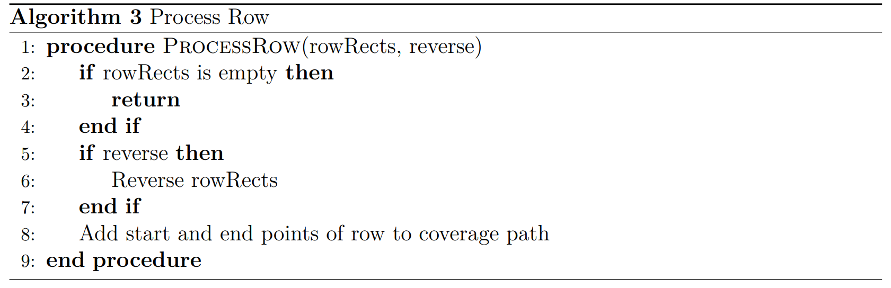

Coverage Path Planning for any 2D Polygon with a PyQT Visualization
Motivation
In the ever-evolving world of robotics and automation, one niche yet crucial area garnering significant attention is Coverage Path Planning (CPP). This sophisticated field, which blends robotics, automation, and computational geometry, is pivotal for navigating and operating within 2D polygonal environments—a scenario ubiquitously encountered across numerous industries. Our latest paper delves into an advanced CPP model designed expressly for such settings, showcasing its industrial significance, inherent complexities, and the groundbreaking solutions we've devised.
At the heart of our model is a clever adaptation to the conventional CPP challenge: it caters to agents (robots or devices) with fixed dimensions, ensuring their efficient and feasible navigation across a 2D polygonal space. By approximating the polygon with a grid that mirrors the agent's size, our approach guarantees exhaustive coverage without overlooking any area or retracing steps unnecessarily. This strategy not only optimizes the coverage process but also circumvents the physical limitations posed by the agent's size.
Our model's complexity is tackled through a Boustrophedon-inspired method, adapted to accommodate the unique contours of the polygonal space. By dynamically merging grid cells and identifying critical waypoints, our algorithm ensures that every inch of the space is covered. The renowned A* algorithm, known for its pathfinding prowess, is employed with a Manhattan distance heuristic to find the most efficient route that fulfills the coverage criteria while respecting the polygon's boundaries.
A pivotal component of our model is its use of PyQt for visualization. This choice transcends mere graphical representation; it enables real-time monitoring and adjustment of the path planning process, a feature invaluable in industrial settings where operational flexibility and immediate feedback are paramount.
The practical implications of CPP are vast and varied. In agriculture, it revolutionizes field coverage for seeding and harvesting. In facility maintenance, it guarantees thorough cleaning with automated systems. And in warehouse management, it enhances inventory processes. Each application not only underscores the utility of CPP but also its adaptability to diverse operational needs and environmental constraints.
Our research is anchored in seminal works, including the foundational A* algorithm by Hart et al. (1968) and the Boustrophedon cellular decomposition approach by Choset and Pignon (1997). The Fields2Cover repository and recent scholarly contributions further enrich our methodology, offering a solid foundation and contemporary insights into CPP's application, particularly in agriculture.
In summary, our exploration of CPP in 2D polygonal environments opens up new horizons for efficiency and automation in industrial applications. By addressing the complex challenges of navigation and coverage, our model stands as a testament to the innovative synergy of computational geometry and practical robotics.
Coverage Path planning Algorithm
The Algorithm consists of three main parts:1. Approximating the polygon in an Agent-Shaped grid.
2. Generating waypoints through the grid in a boustrophedon pattern.
3. A* Algorithm that builds a path through all waypoints. After the first part of the Algorithm, we get these blue rectangles which cover the full polygon. The Algorithm works like this:
Here are the main parts of the Algorithm:  after this we get the boustrophedon pattern:
 You can find the code on My GitHub:
PathPlanning on Github
You can find the code on My GitHub:
PathPlanning on Github